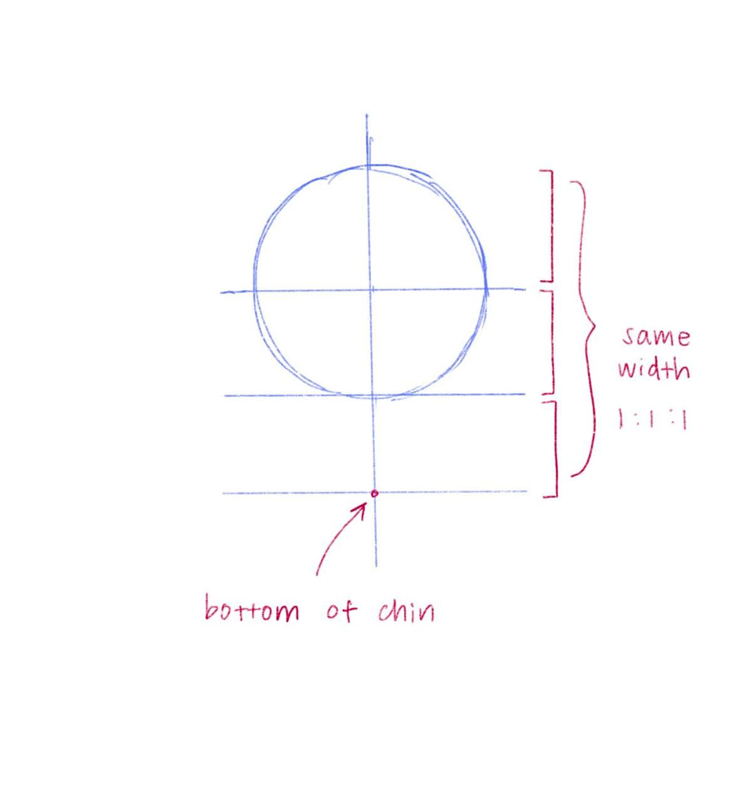
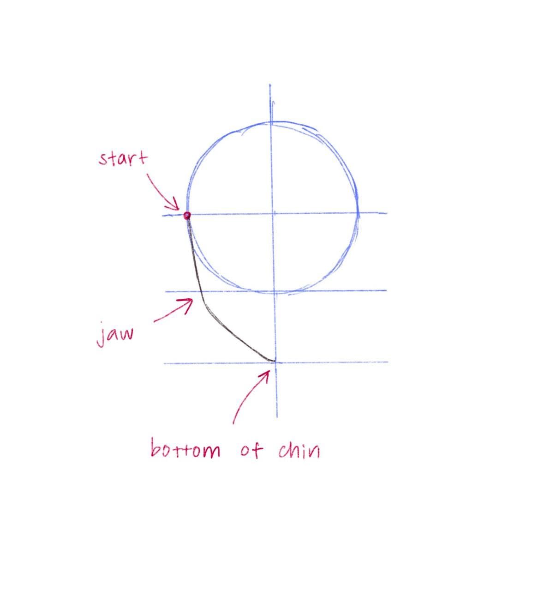
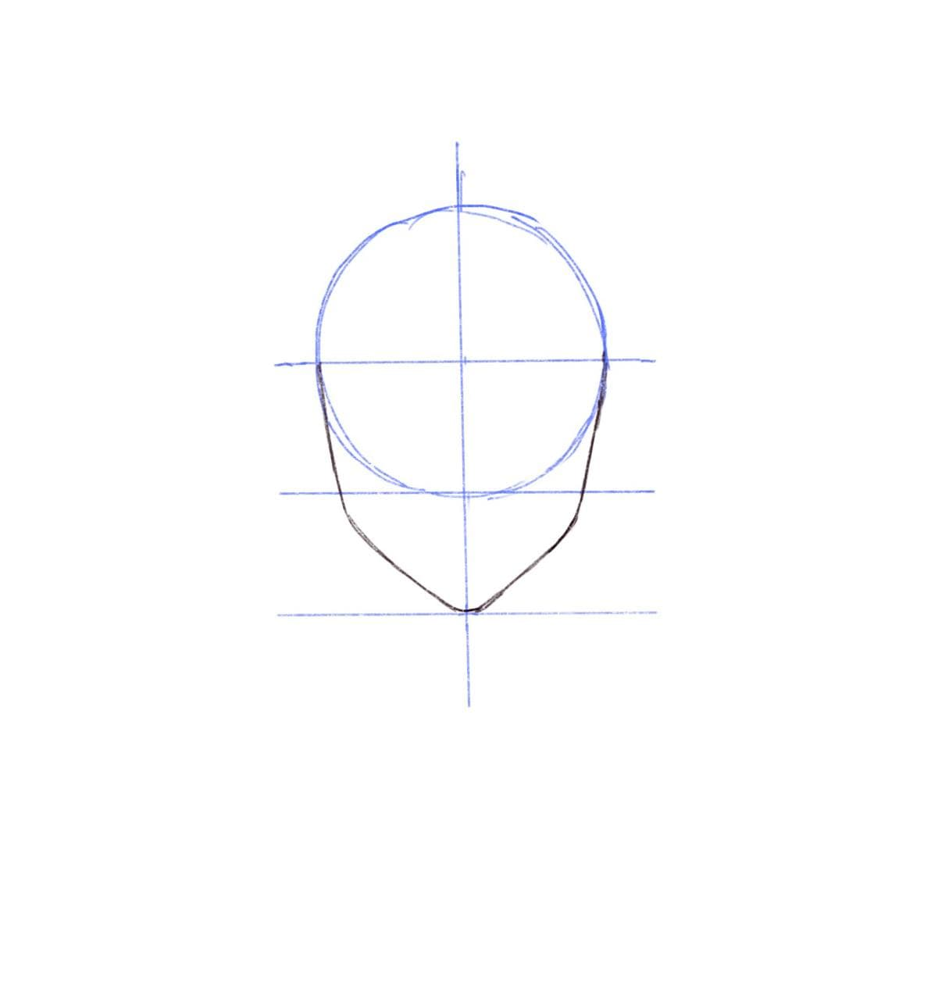
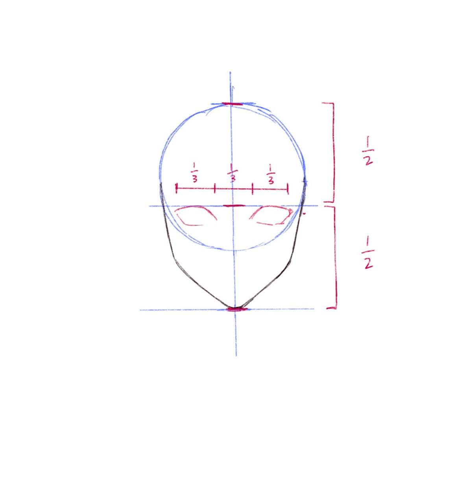
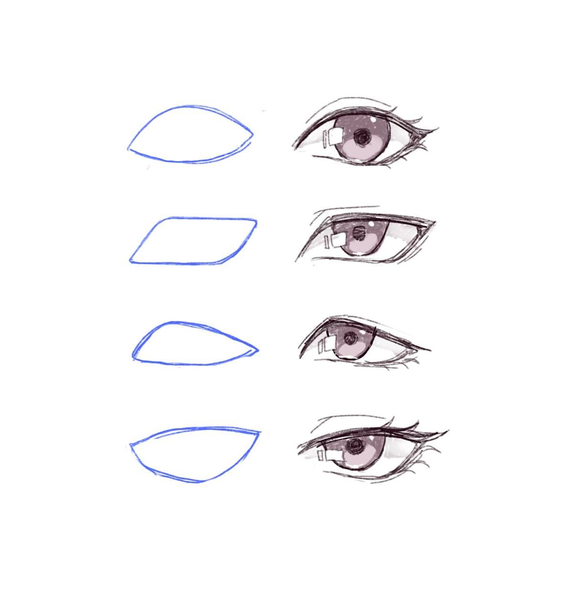
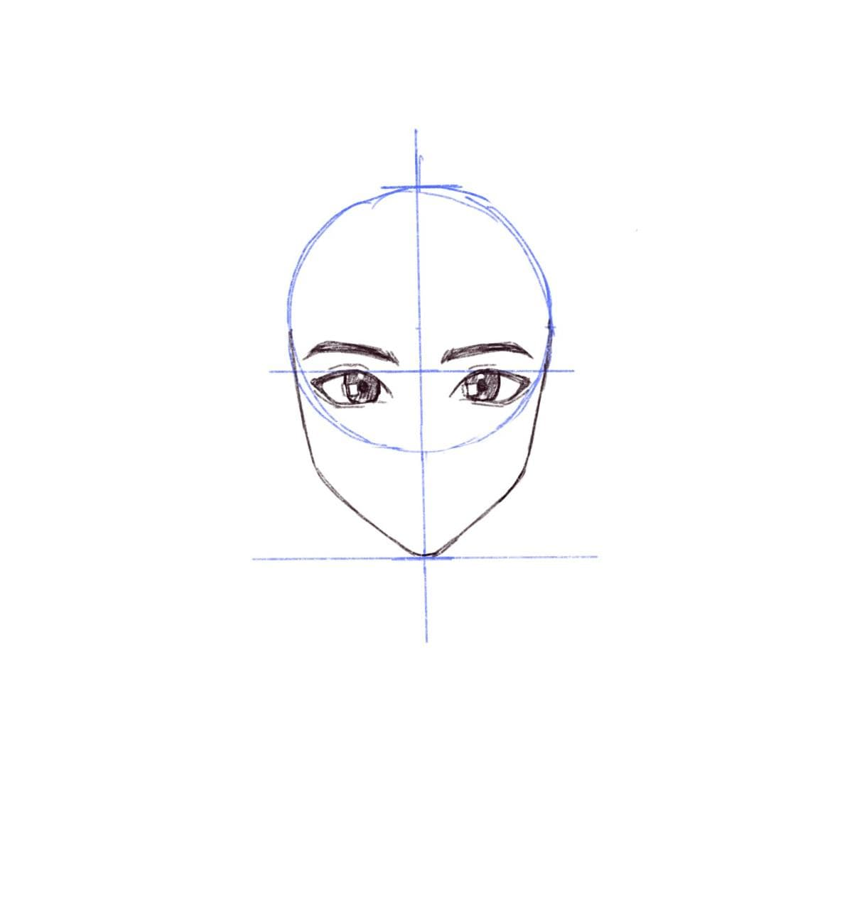
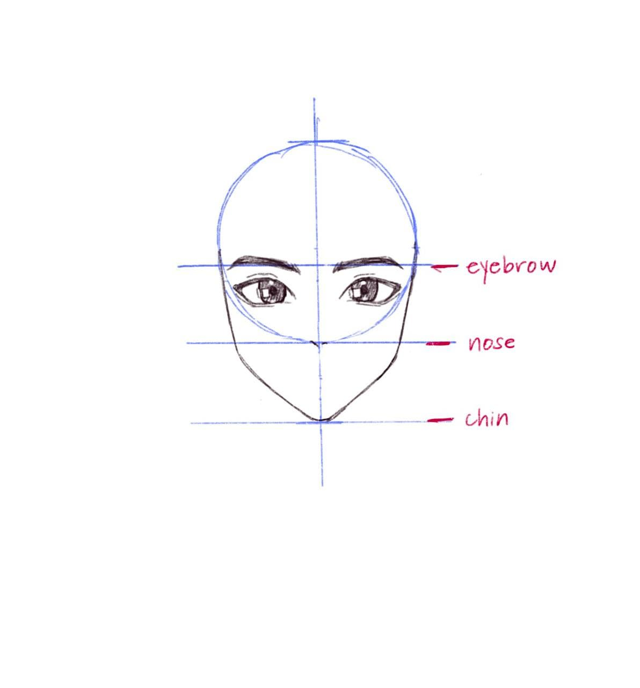
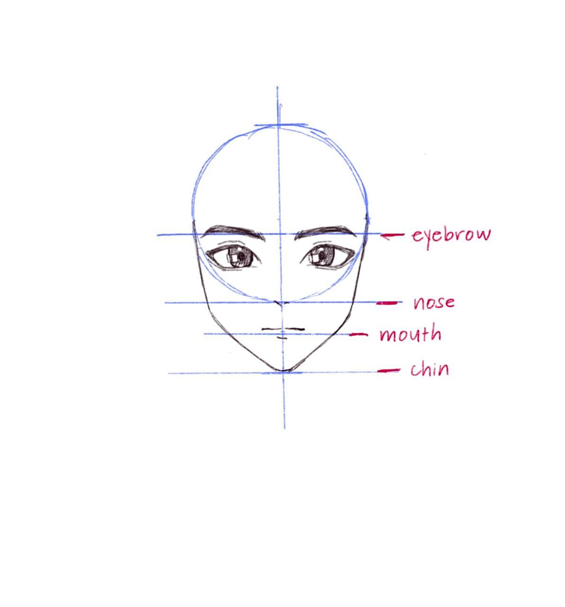
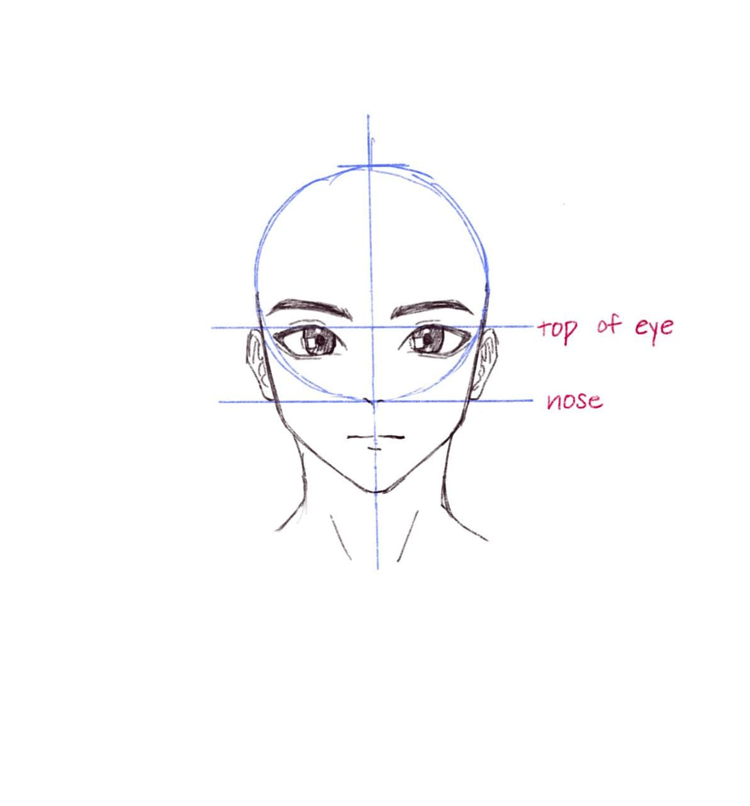
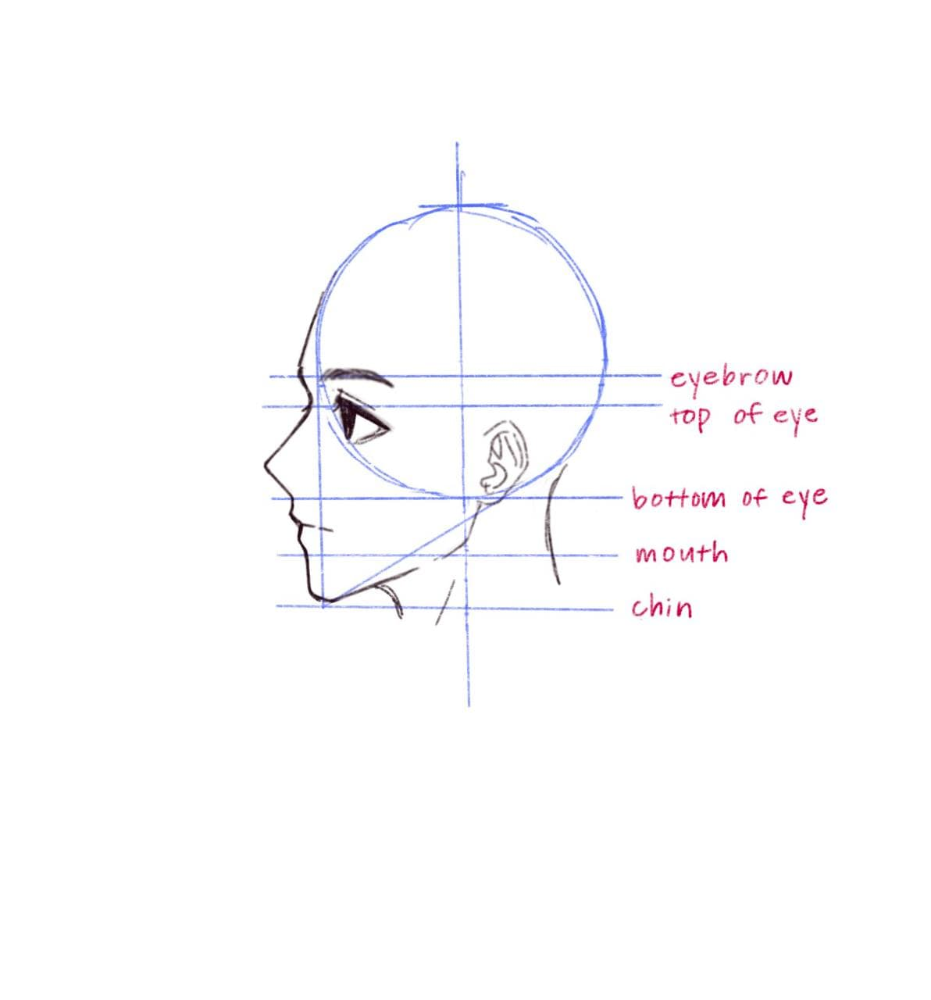

Draw a circle with a horizontal and vertical line intersecting the middle of the circle
Draw another horizontal line right below the circle, then another one ½ of the height of the circle below the one you just drew. This will mark the bottom of the chin
Draw two slightly sloping curves, the first one coming from the edge of the circle to around the jaw, then another sloping curve from the jaw to the chin
Repeat on the other side (try and keep it symmetrical)
Draw a line in the middle of the entire head horizontally. This is where the top of the eyes will start
Eyes can come in many different shapes/forms. Here are a few examples of some common eye shapes. Every eye style varies style from style, but these are ones I typically use
The eyes should be able to fit another eye in between. Eyebrows slightly extend outside of the guidelines. Again, there are many different eyebrow styles, but for simplicity, I will do a style that is easiest for me
Draw a horizontal line in the middle from the top of the eyes to the bottom of the chin. This is where the bottom part of the nose will go. Again, many nose types, but for simplicity I will do this simple nose design
Draw another horizontal line between the nose line to the chin, this is where the mouth is. It does not have to be too detailed, since most of the detail will come in the color/shading
Ears start at the top of the eye and end at the bottom of the nose. Try not to draw them sticking out too much
You can also repeat the same steps with side profiles